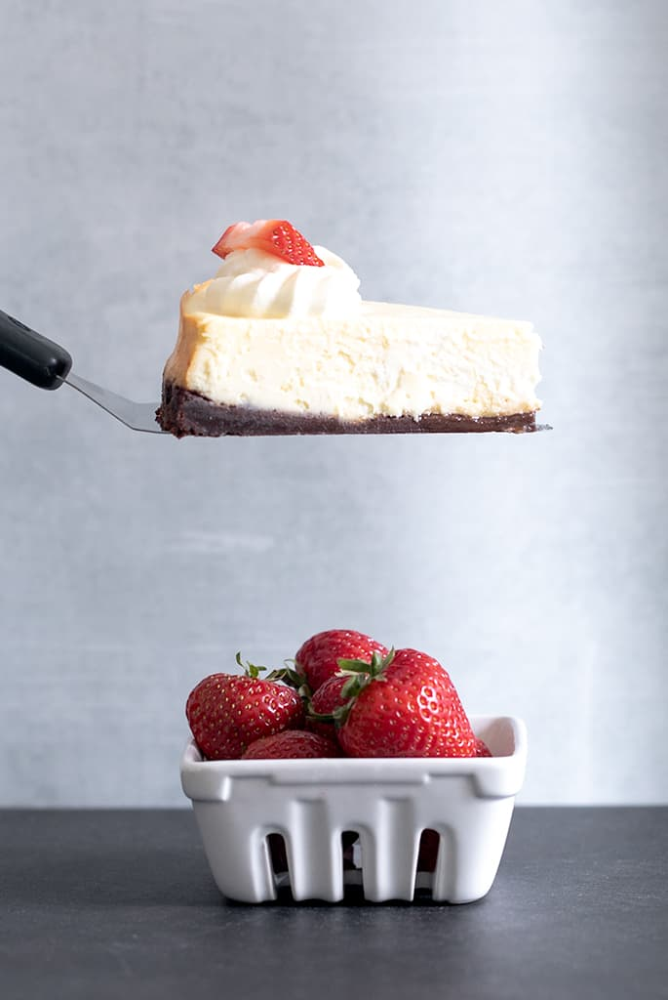

Gluten Free Cheesecake

Description
This classic gluten free cheesecake is technically a “plain” cheesecake, but the taste and texture make it anything but plain. It's smooth and silky, and each bite tastes light and creamy.
Equipment
- 19 inch Springform Pan
- Stand Mixer
Ingredients
- 1 ½ cups (225 g) gluten free graham crackers crushed
- 8 tablespoons (112 g) unsalted butter melted
- 3 8-ounce (24 ounces) packages cream cheese at room temperature
- ¾ cup (150 g) granulated sugar
- 3 tablespoons (27 g) cornstarch
- ¼ teaspoon kosher salt
- 1 ½ teaspoons pure vanilla extract
- 3 (150 g (weighed out of shell)) eggs at room temperature